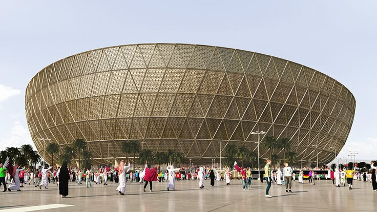

Estadio Lusail, Qatar

otro imagen del lusail

Historia, pasion y el deporte mas popular del mundo
El fútbol es el deporte más popular del mundo, practicado por más de 250 millones de jugadores en más de 200 países. Nació en Inglaterra a mediados del siglo XIX y desde entonces conquistó cada rincón del planeta, convirtiéndose en mucho más que un juego: es una cultura, una pasión y un lenguaje universal que une a personas de todas las edades y culturas.
Se juega entre dos equipos de once jugadores cada uno, con el objetivo de introducir el balón en el arco del equipo contrario. Sencillo en su concepto, infinito en su complejidad táctica y emocional

El fútbol moderno surgió en 1863 cuando la Football Association de Inglaterra redactó las primeras reglas oficiales del juego. A partir de ahí, el deporte se expandió rápidamente por Europa y luego por toda América, África y Asia.
Argentina es una de las grandes potencias del fútbol mundial. El país cuenta con figuras históricas como Diego Armando Maradona y Lionel Messi, y ha ganado la Copa del Mundo en tres ocasiones: 1978, 1986 y 2022.
podes conocer mas sobre el futbol argentino en el sitio oficial de la AFA
La Copa Mundial de la FIFA es el evento deportivo más visto del planeta. Se celebra cada cuatro años y reúne a las mejores selecciones nacionales. Más información en el sitio oficial de la FIFA
El gol más rápido de la historia en un Mundial lo marcó Hakan Şükür de Turquía, apenas 10,8 segundos después del inicio del partido en el Mundial de 2002. Argentina ganó su tercer mundial en Qatar 2022, con Lionel Messi como figura del torneo.